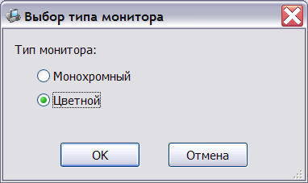

Для компьютеров Apple ][ и режима эмуляции Apple в Агат-9 возможна эмуляция монохромного или цветного мониторов, т.к. это в некоторых ситуациях значительно изменяет зрительное восприятие экрана.
Выбор типа монитора производится в окне настройки:

При работе системы тип монитора может быть сменён нажатием клавиши F4.
Различие в этих двух режимах показано на следующих рисунках:
См. также: Изменение конфигурации, Описание и настройка устройств, Поддерживаемое оборудование, Главное меню